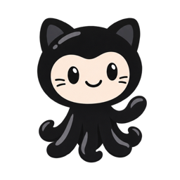
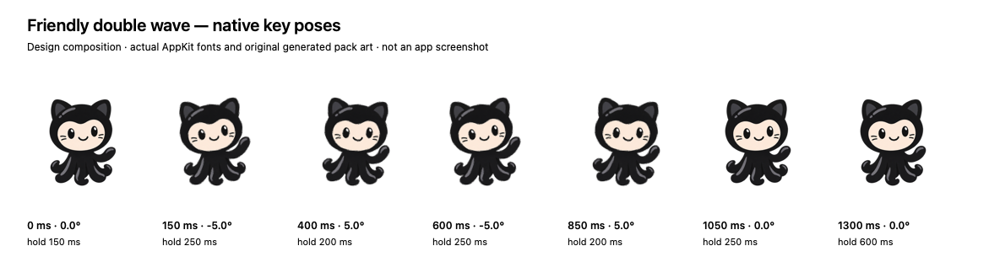
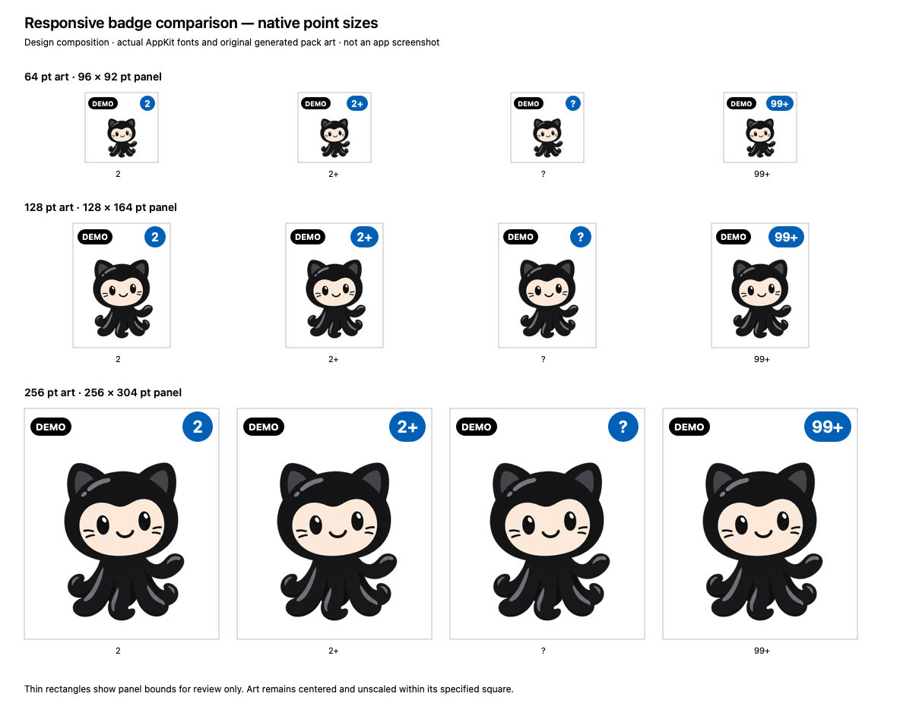
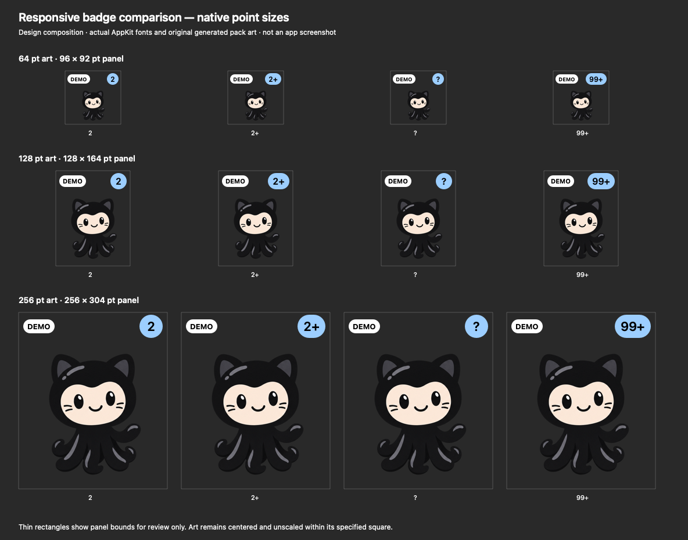

Design review for #28 and #29. Native badge images use actual AppKit fonts and original generated pack art. The playable wave below demonstrates the proposed timing and art-layer motion in a browser; it is not the application.
Static fallbacks. Nothing plays automatically.

Same 1900 ms finite gesture at all sizes; no label/window movement. System Reduce Motion also forces the static pose. The preview button represents an already eligible event; it does not implement source/baseline, quiet-hours or snooze logic.


